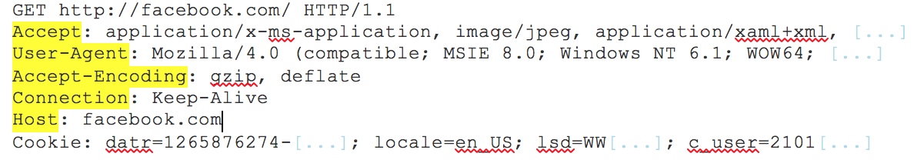
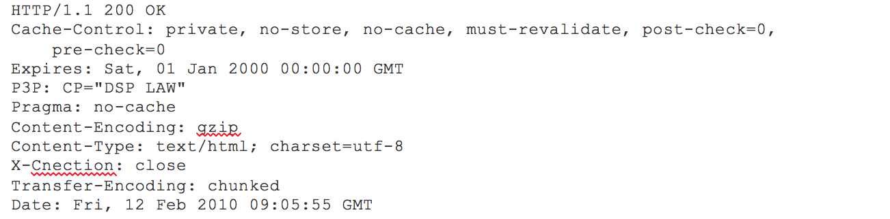

If you are in any type of a technical profession, I am sure someone at some point has asked you this question. Whether you are an engineer, developer, marketer or even in sales, it is always good to have a basic understanding of what is going on behind our browsers and how information is transferred to our computers via the internet.
Let’s imagine that you want to access maps.google.com to check the exact time it would take for you to get to your dinner reservation from work.
1. You type maps.google.com into the address bar of your browser.
2. The browser checks the cache for a DNS record to find the corresponding IP address of maps.google.com.
DNS(Domain Name System) is a database that maintains the name of the website (URL) and the particular IP address it links to. Every single URL on the internet has a unique IP address assigned to it. The IP address belongs to the computer which hosts the server of the website we are requesting to access. For an example, www.google.com has an IP address of 209.85.227.104. So if you’d like you can reach www.google.com by typing http://209.85.227.104 on your browser. DNS is a list of URLs and their IP addresses just like how a phone book is a list of names and their corresponding phone numbers.
The main purpose of DNS is human-friendly navigation. You can easily access a website by typing the correct IP address for it on your browser but imagine having to remember different sets of numbers for all the websites we regularly access? Therefore, it is easier to remember the name of the website using an URL and let DNS do the work for us with mapping it to the correct IP.
In order to find the DNS record, the browser checks four caches.
- First, it checks the browser cache. The browser maintains a repository of DNS records for a fixed duration for websites you have previously visited. So, it is the first place to run a DNS query.
- Second, the browser checks the OS cache. If it is not found in the browser cache, the browser would make a system call (i.e. gethostname on Windows) to your underlying computer OS to fetch the record since the OS also maintains a cache of DNS records.
- Third, it checks the router cache. If it’s not found on your computer, the browser would communicate with the router that maintains its’ own cache of DNS records.
- Fourth, it checks the ISP cache. If all steps fail, the browser would move on to the ISP. Your ISP maintains its’ own DNS server which includes a cache of DNS records which the browser would check with the last hope of finding your requested URL.
You may wonder why there are so many caches maintained at so many levels. Although our information being cached somewhere doesn’t make us feel very comfortable when it comes to privacy, caches are important for regulating network traffic and improving data transfer times.
3. If the requested URL is not in the cache, ISP’s DNS server initiates a DNS query to find the IP address of the server that hosts maps.google.com.
As mentioned earlier, in order for my computer to connect with the server that hosts maps.google.com, I need the IP address of maps.google.com. The purpose of a DNS query is to search multiple DNS servers on the internet until it finds the correct IP address for the website. This type of search is called a recursive search since the search will continue repeatedly from DNS server to DNS server until it either finds the IP address we need or returns an error response saying it was unable to find it.
In this situation, we would call the ISP’s DNS server a DNS recursor whose responsibility is to find the proper IP address of the intended domain name by asking other DNS servers on the internet for an answer. The other DNS servers are called name servers since they perform a DNS search based on the domain architecture of the website domain name.
Without further confusing you, I’d like to use the following diagram to explain the domain architecture.

Many website URLs we encounter today contain a third-level domain, a second-level domain, and a top-level domain. Each of these levels contains their own name server which is queried during the DNS lookup process.
For maps.google.com, first, the DNS recursor will contact the root name server. The root name server will redirect it to .com domain name server. .com name server will redirect it to google.com name server. google.com name server will find the matching IP address for maps.google.com in its’ DNS records and return it to your DNS recursor which will send it back to your browser.
These requests are sent using small data packets which contain information such as the content of the request and the IP address it is destined for (IP address of the DNS recursor). These packets travel through multiple networking equipment between the client and the server before it reaches the correct DNS server. This equipment use routing tables to figure out which way is the fastest possible way for the packet to reach its’ destination. If these packets get lost you’ll get a request failed error. Otherwise, they will reach the correct DNS server, grab the correct IP address, and come back to your browser.
4. Browser initiates a TCP connection with the server.
Once the browser receives the correct IP address it will build a connection with the server that matches IP address to transfer information. Browsers use internet protocols to build such connections. There are a number of different internet protocols which can be used but TCP is the most common protocol used for any type of HTTP request.
In order to transfer data packets between your computer(client) and the server, it is important to have a TCP connection established. This connection is established using a process called the TCP/IP three-way handshake. This is a three step process where the client and the server exchange SYN(synchronize) and ACK(acknowledge) messages to establish a connection.
1. Client machine sends a SYN packet to the server over the internet asking if it is open for new connections.
2. If the server has open ports that can accept and initiate new connections, it’ll respond with an ACKnowledgment of the SYN packet using a SYN/ACK packet.
3. The client will receive the SYN/ACK packet from the server and will acknowledge it by sending an ACK packet.
Then a TCP connection is established for data transmission!
5. The browser sends an HTTP request to the web server.
Once the TCP connection is established, it is time to start transferring data! The browser will send a GET request asking for maps.google.com web page. If you’re entering credentials or submitting a form this could be a POST request. This request will also contain additional information such as browser identification (User-Agent header), types of requests that it will accept (Accept header), and connection headers asking it to keep the TCP connection alive for additional requests. It will also pass information taken from cookies the browser has in store for this domain.
Sample GET request (Headers are highlighted):
(If you’re curious about what’s going on behind the scenes you can use tools such as Firebug to take a look at HTTP requests. It is always fun to see the information passed between clients and servers without us knowing).
6. The server handles the request and sends back a response.
The server contains a web server (i.e Apache, IIS) which receives the request from the browser and passes it to a request handler to read and generate a response. The request handler is a program (written in ASP.NET, PHP, Ruby, etc.) that reads the request, its’ headers, and cookies to check what is being requested and also update the information on the server if needed. Then it will assemble a response in a particular format (JSON, XML, HTML).
7. The server sends out an HTTP response.
The server response contains the web page you requested as well as the status code, compression type (Content-Encoding), how to cache the page (Cache-Control), any cookies to set, privacy information, etc.
Example HTTP server response:
If you look at the above response the first line shows a status code. This is quite important as it tells us the status of the response. There are five types of statuses detailed using a numerical code.
- 1xx indicates an informational message only
- 2xx indicates success of some kind
- 3xx redirects the client to another URL
- 4xx indicates an error on the client’s part
- 5xx indicates an error on the server’s part
So, if you encountered an error you can take a look at the HTTP response to check what type of status code you have received.
8. The browser displays the HTML content (for HTML responses which is the most common).
The browser displays the HTML content in phases. First, it will render the bare bone HTML skeleton. Then it will check the HTML tags and sends out GET requests for additional elements on the web page, such as images, CSS stylesheets, JavaScript files etc. These static files are cached by the browser so it doesn’t have to fetch them again the next time you visit the page. At the end, you’ll see maps.google.com appearing on your browser.
That’s it!
Although this seems like a very tedious prolonged process we know that it takes less than seconds for a web page to render after we hit enter on our keyboard. All of these steps happens within milliseconds before we could even notice.